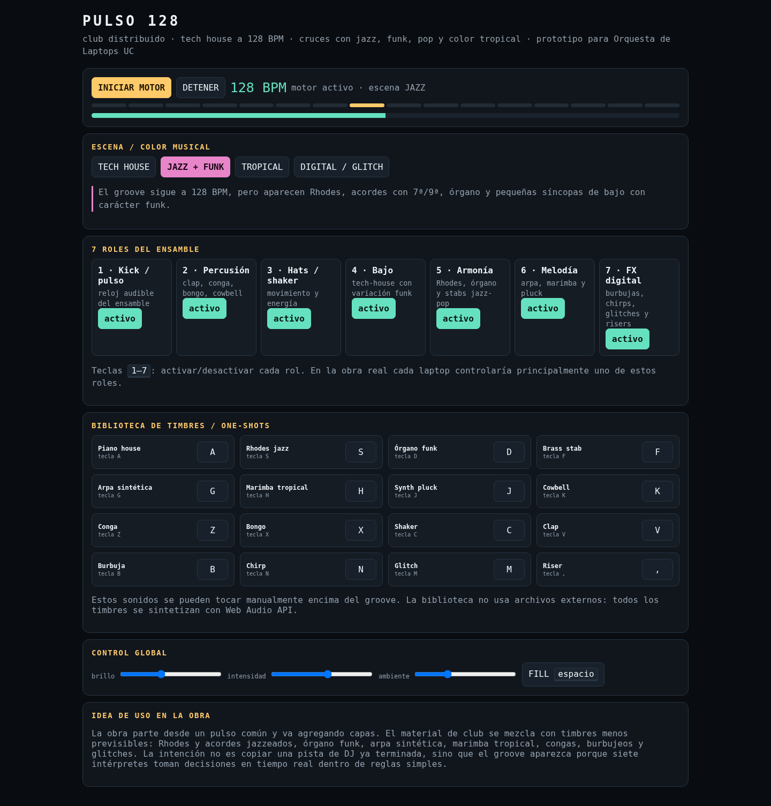

PULSO 128
T1: Propuesta de obra · Club distribuido · tech house + jazz + funk + pop + color tropical · 128 BPM
Idea
PULSO 128 es una obra de aproximadamente seis minutos para siete a doce laptops. La idea es construir una pieza bailable de tech house a 128 BPM donde ninguna estación contenga la canción completa. El groove aparece porque distintos intérpretes controlan kick, percusión, hats, bajo, armonía, melodía y efectos, tomando decisiones en tiempo real dentro de reglas simples.
La base house se mezcla con acordes con séptimas y novenas, Rhodes, órgano funk, piano, arpa sintética, marimba, congas y bongos, además de burbujeos, chirps, glitches y ruido. Me interesa que el computador no se limite a imitar una banda acústica, sino que aporte un lenguaje propio.
Parte 1 · Referentes
Me interesa la libertad controlada: cada intérprete repite y avanza a su ritmo, pero todos comparten un pulso y reglas comunes. Tomo esa libertad, pero la distribuyo entre roles sonoros distintos.
FuenteTomo la idea de interfaces por voz, instrucciones en pantalla, independencia de una red local y un sonido claramente computacional. No uso síntesis granular como mecanismo central porque necesito ataques rítmicos definidos.
FuenteLa obra procesa sonidos grabados en tiempo real para producir acordes y patrones rítmicos distribuidos entre parlantes. Tomo la diversidad tímbrica, el procesamiento y la distribución espacial.
FuenteParte 2 · Forma y coordinación
| Sección | Tiempo | Qué ocurre |
|---|---|---|
| I. Arranque | 0:00-0:30 | Kick, ruido, shaker y FX. Se establece el pulso. |
| II. Ensamble | 0:30-1:15 | Entran hats, clap, bajo y primeros stabs. |
| III. Groove tech-house | 1:15-2:15 | Groove completo con variaciones pequeñas y fills. |
| IV. Jazz/funk/tropical | 2:15-3:30 | Rhodes, órgano, acordes extendidos, marimba, arpa y percusión tropical. |
| V. Fractura digital | 3:30-4:15 | Menos capas estables; más glitches, burbujas, chirps y pequeños desfases. |
| VI. Reencuentro / peak | 4:15-5:30 | El kick reaparece, cuenta de cuatro tiempos y reconstrucción del groove. |
| VII. Apagado | 5:30-6:00 | Las capas desaparecen una por una. |
Coordinación
No se necesita red local. La estación 1 entrega un kick en negras que funciona como reloj audible. El director marca inicios y cambios importantes; al comenzar una nueva sección puede hacer una cuenta de cuatro tiempos. La obra tolera pequeñas diferencias mientras el groove siga siendo reconocible.
Roles
Pulso y referencia temporal.
Clap, conga, bongo, cowbell.
Energía y contratiempo.
Tech-house con variante funk.
Stabs, Rhodes, órgano.
Piano, arpa, marimba, pluck.
Burbujas, chirps, glitches, risers.
Parte 3 · Material sonoro
Render de 45 segundos
Estéreo · 44,1 kHz · 16-bit PCM. Resume las escenas tech-house, jazz/funk, tropical y digital.
Prototipo web
El archivo PULSO128_v2.html funciona sin librerías externas ni samples. Incluye siete roles, cuatro escenas y una biblioteca con piano, Rhodes, órgano, brass, arpa, marimba, pluck, cowbell, conga, bongo, shaker, clap y efectos digitales.

Riesgos
- Deriva temporal: corrección por kick audible y nueva cuenta.
- Saturación: cada sección limita timbres y densidad.
- Volúmenes distintos: prueba previa y límites de ganancia.
- Falla técnica: los roles se pueden redistribuir temporalmente.
Uso de IA
Utilicé ChatGPT (OpenAI) para organizar la propuesta, investigar y verificar referentes, transformar la idea en una estructura ejecutable y desarrollar/revisar el prototipo en JavaScript/Web Audio API. Las decisiones musicales centrales fueron definidas a partir de mis intereses y de las experiencias del curso. Probé personalmente la versión base del prototipo en Safari en macOS; la versión 2 fue verificada en Chromium y debe revisarse una vez más en Safari antes de la entrega.
Prompt relevante: crear una propuesta para Orquesta de Laptops a 128 BPM que mezcle tech house con jazz, funk, pop, color tropical y sonidos computacionales; repartir el material entre intérpretes y desarrollar un prototipo web autónomo.
Para el detalle completo de referentes, partitura por roles, riesgos, documentación y fuentes, ver Propuesta_PULSO128.pdf.